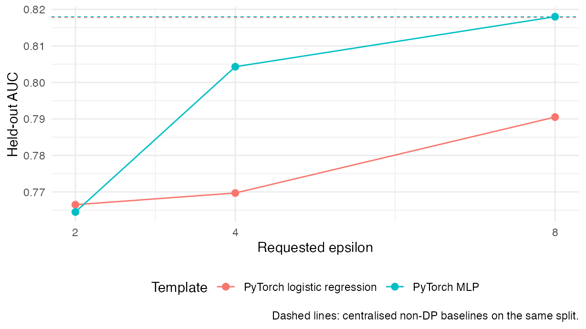
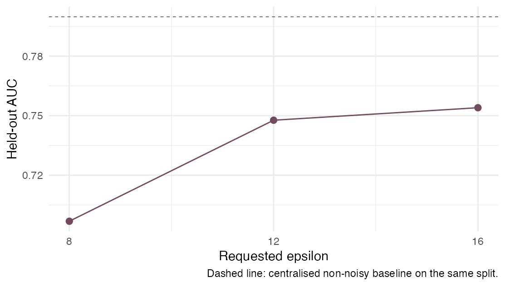
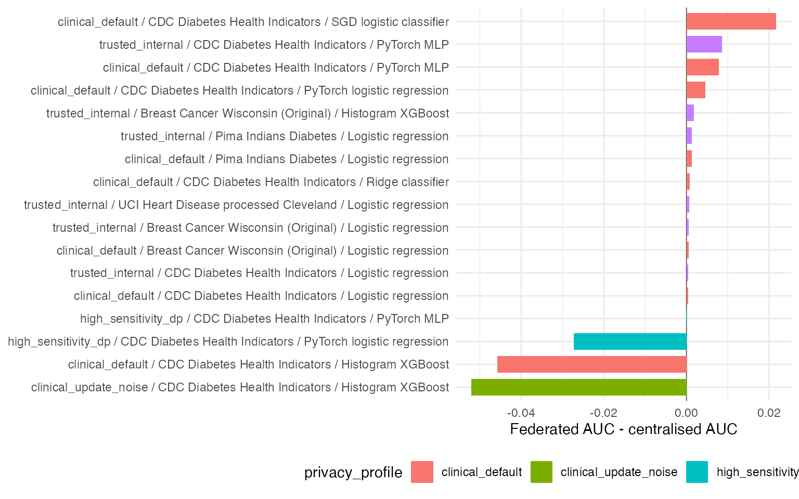

Clinical Privacy Benchmarks
clinical-privacy-benchmarks.RmdThis vignette reports public clinical benchmark runs executed through
the same DataSHIELD/Flower path used by dsFlower applications. Each run
partitions the training data over three Opal/Rock servers, launches the
selected authorised template through ds.flower.fit(),
trains a centralised baseline on the same training split, evaluates both
models on the same held-out test set, and records the approved output
metrics.
The datasets are public health or biomedical classification datasets: Breast Cancer Wisconsin (Original), UCI Heart Disease processed Cleveland, Pima Indians Diabetes, and CDC Diabetes Health Indicators. The benchmark matrix matches each privacy profile to dataset/model combinations that satisfy the active server-side row policy. Heart Disease contributes to the trusted-internal evidence, while the stricter clinical and DP profiles use larger datasets so that the row policy is satisfied before training starts.
Re-running the evidence
The commands below reproduce the committed benchmark evidence against a local three-Opal stack.
Sys.setenv(
DSFLOWER_DEMO_PRIVACY_PROFILE = "trusted_internal",
DSFLOWER_CDC_DIABETES_LIMIT = "9000",
DSFLOWER_CLINICAL_EVIDENCE_FILE =
"inst/extdata/dsflower_clinical_algorithm_results.json"
)
source(system.file(
"demos", "benchmark_clinical_algorithms.R",
package = "dsFlowerClient"
))
Sys.setenv(
DSFLOWER_DEMO_PRIVACY_PROFILE = "clinical_default",
DSFLOWER_CLINICAL_MODELS =
"sklearn_logreg,sklearn_ridge,sklearn_sgd,pytorch_logreg,pytorch_mlp,xgboost_histogram",
DSFLOWER_CDC_DIABETES_LIMIT = "9000",
DSFLOWER_CLINICAL_XGB_TREES = "5",
DSFLOWER_CLINICAL_XGB_DEPTH = "1",
DSFLOWER_CLINICAL_XGB_BINS = "16",
DSFLOWER_CLINICAL_EVIDENCE_FILE =
"inst/extdata/dsflower_clinical_secagg_results.json"
)
source(system.file(
"demos", "benchmark_clinical_algorithms.R",
package = "dsFlowerClient"
))
Sys.setenv(
DSFLOWER_DEMO_PRIVACY_PROFILE = "clinical_update_noise",
DSFLOWER_CLINICAL_DATASETS = "cdc_diabetes_health_indicators",
DSFLOWER_CLINICAL_MODELS = "xgboost_histogram",
DSFLOWER_CDC_DIABETES_LIMIT = "9000",
DSFLOWER_CLINICAL_XGB_TREES = "5",
DSFLOWER_CLINICAL_XGB_DEPTH = "1",
DSFLOWER_CLINICAL_XGB_BINS = "16",
DSFLOWER_CLINICAL_DP_EPSILON = "12",
DSFLOWER_CLINICAL_DP_DELTA = "1e-5",
DSFLOWER_CLINICAL_DP_CLIP = "5",
DSFLOWER_CLINICAL_EVIDENCE_FILE =
"inst/extdata/dsflower_xgboost_histogram_privacy_results.json"
)
source(system.file(
"demos", "benchmark_clinical_algorithms.R",
package = "dsFlowerClient"
))
Sys.setenv(
DSFLOWER_DEMO_PRIVACY_PROFILE = "high_sensitivity_dp",
DSFLOWER_CLINICAL_DATASETS = "cdc_diabetes_health_indicators",
DSFLOWER_CLINICAL_MODELS = "pytorch_mlp,pytorch_logreg",
DSFLOWER_CDC_DIABETES_LIMIT = "9000",
DSFLOWER_CLINICAL_DP_EPSILON = "8",
DSFLOWER_CLINICAL_DP_DELTA = "1e-5",
DSFLOWER_CLINICAL_DP_CLIP = "1",
DSFLOWER_CLINICAL_EVIDENCE_FILE =
"inst/extdata/dsflower_clinical_dp_results.json"
)
source(system.file(
"demos", "benchmark_clinical_algorithms.R",
package = "dsFlowerClient"
))
for (model in c("pytorch_logreg", "pytorch_mlp")) {
for (eps in c(2, 4, 8)) {
if (model == "pytorch_logreg") {
Sys.setenv(DSFLOWER_CLINICAL_TORCH_LOGREG_ROUNDS = "10")
} else {
Sys.unsetenv("DSFLOWER_CLINICAL_TORCH_LOGREG_ROUNDS")
}
Sys.setenv(
DSFLOWER_DEMO_PRIVACY_PROFILE = "high_sensitivity_dp",
DSFLOWER_CLINICAL_DATASETS = "cdc_diabetes_health_indicators",
DSFLOWER_CLINICAL_MODELS = model,
DSFLOWER_CDC_DIABETES_LIMIT = "9000",
DSFLOWER_CLINICAL_DP_EPSILON = as.character(eps),
DSFLOWER_CLINICAL_DP_DELTA = "1e-5",
DSFLOWER_CLINICAL_DP_CLIP = "1",
DSFLOWER_DEMO_PRIVACY_LEDGER_NAMESPACE =
paste0("dp_curve_rebuild_", model, "_eps", eps),
DSFLOWER_CLINICAL_EVIDENCE_FILE =
paste0("dsflower_output/dp_curve_", model, "_eps", eps, ".json")
)
source(system.file(
"demos", "benchmark_clinical_algorithms.R",
package = "dsFlowerClient"
))
}
}
for (eps in c(8, 12, 16)) {
Sys.setenv(
DSFLOWER_DEMO_PRIVACY_PROFILE = "clinical_update_noise",
DSFLOWER_PRIVACY_MAX_EPSILON = "32",
DSFLOWER_CLINICAL_DATASETS = "cdc_diabetes_health_indicators",
DSFLOWER_CLINICAL_MODELS = "xgboost_histogram",
DSFLOWER_CDC_DIABETES_LIMIT = "9000",
DSFLOWER_CLINICAL_XGB_TREES = "5",
DSFLOWER_CLINICAL_XGB_DEPTH = "1",
DSFLOWER_CLINICAL_XGB_BINS = "16",
DSFLOWER_CLINICAL_DP_EPSILON = as.character(eps),
DSFLOWER_CLINICAL_DP_DELTA = "1e-5",
DSFLOWER_CLINICAL_DP_CLIP = "5",
DSFLOWER_DEMO_PRIVACY_LEDGER_NAMESPACE =
paste0("xgb_update_noise_rebuild_eps", eps),
DSFLOWER_CLINICAL_EVIDENCE_FILE =
paste0("dsflower_output/xgb_update_noise_eps", eps, ".json")
)
source(system.file(
"demos", "benchmark_clinical_algorithms.R",
package = "dsFlowerClient"
))
}Result tables
policy_table <- unique(
results[, c("evidence", "privacy_profile", "privacy_mechanism",
"secagg_required", "dp_scope")]
)
knitr::kable(policy_table, row.names = FALSE)| evidence | privacy_profile | privacy_mechanism | secagg_required | dp_scope |
|---|---|---|---|---|
| trusted_internal | trusted_internal | none | FALSE | none |
| clinical_default_secagg | clinical_default | secure_aggregation | TRUE | none |
| high_sensitivity_dp | high_sensitivity_dp | secure_aggregation_plus_patient_level_dp_sgd | TRUE | patient_level_dp_sgd |
| xgboost_histogram_update_noise | clinical_update_noise | secure_aggregation_plus_update_noise | TRUE | update_noise_only |
| evidence | privacy_profile | privacy_mechanism | secagg_required | dp_scope | epsilon | dataset | model | status | n | train_test | sites | rounds | central_auc | federated_auc | delta_auc | central_accuracy | federated_accuracy | delta_accuracy | failures |
|---|---|---|---|---|---|---|---|---|---|---|---|---|---|---|---|---|---|---|---|
| trusted_internal | trusted_internal | none | FALSE | none | NA | Breast Cancer Wisconsin (Original) | Logistic regression | pass | 683 | 513/170 | 171/171/171 | 2 | 0.9902 | 0.9908 | 0.0006 | 0.9529 | 0.9647 | 0.0118 | 0 |
| trusted_internal | trusted_internal | none | FALSE | none | NA | Breast Cancer Wisconsin (Original) | Histogram XGBoost | pass | 683 | 513/170 | 171/171/171 | 1 | 0.9755 | 0.9772 | 0.0018 | 0.9118 | 0.9353 | 0.0235 | 0 |
| trusted_internal | trusted_internal | none | FALSE | none | NA | UCI Heart Disease processed Cleveland | Logistic regression | pass | 297 | 223/74 | 75/74/74 | 2 | 0.8919 | 0.8926 | 0.0007 | 0.8378 | 0.8514 | 0.0135 | 0 |
| trusted_internal | trusted_internal | none | FALSE | none | NA | Pima Indians Diabetes | Logistic regression | pass | 768 | 576/192 | 192/192/192 | 2 | 0.8253 | 0.8266 | 0.0013 | 0.7760 | 0.7708 | -0.0052 | 0 |
| trusted_internal | trusted_internal | none | FALSE | none | NA | CDC Diabetes Health Indicators | Logistic regression | pass | 9000 | 6751/2249 | 2251/2251/2249 | 2 | 0.8293 | 0.8298 | 0.0004 | 0.8635 | 0.8635 | 0.0000 | 0 |
| trusted_internal | trusted_internal | none | FALSE | none | NA | CDC Diabetes Health Indicators | PyTorch MLP | pass | 9000 | 6751/2249 | 2251/2251/2249 | 6 | 0.8180 | 0.8267 | 0.0086 | 0.8666 | 0.8617 | -0.0049 | 0 |
knitr::kable(
subset(results, evidence == "clinical_default_secagg"),
digits = 4,
row.names = FALSE
)| evidence | privacy_profile | privacy_mechanism | secagg_required | dp_scope | epsilon | dataset | model | status | n | train_test | sites | rounds | central_auc | federated_auc | delta_auc | central_accuracy | federated_accuracy | delta_accuracy | failures |
|---|---|---|---|---|---|---|---|---|---|---|---|---|---|---|---|---|---|---|---|
| clinical_default_secagg | clinical_default | secure_aggregation | TRUE | none | NA | Breast Cancer Wisconsin (Original) | Logistic regression | pass | 683 | 513/170 | 171/171/171 | 2 | 0.9902 | 0.9908 | 0.0006 | 0.9529 | 0.9647 | 0.0118 | 0 |
| clinical_default_secagg | clinical_default | secure_aggregation | TRUE | none | NA | Pima Indians Diabetes | Logistic regression | pass | 768 | 576/192 | 192/192/192 | 2 | 0.8253 | 0.8266 | 0.0013 | 0.7760 | 0.7708 | -0.0052 | 0 |
| clinical_default_secagg | clinical_default | secure_aggregation | TRUE | none | NA | CDC Diabetes Health Indicators | Logistic regression | pass | 9000 | 6751/2249 | 2251/2251/2249 | 2 | 0.8293 | 0.8298 | 0.0004 | 0.8635 | 0.8635 | 0.0000 | 0 |
| clinical_default_secagg | clinical_default | secure_aggregation | TRUE | none | NA | CDC Diabetes Health Indicators | Histogram XGBoost | pass | 9000 | 6751/2249 | 2251/2251/2249 | 1 | 0.7998 | 0.7540 | -0.0458 | 0.8608 | 0.8608 | 0.0000 | 0 |
| clinical_default_secagg | clinical_default | secure_aggregation | TRUE | none | NA | CDC Diabetes Health Indicators | Ridge classifier | pass | 9000 | 6751/2249 | 2251/2251/2249 | 2 | 0.8283 | 0.8291 | 0.0008 | 0.8617 | 0.8613 | -0.0004 | 0 |
| clinical_default_secagg | clinical_default | secure_aggregation | TRUE | none | NA | CDC Diabetes Health Indicators | SGD logistic classifier | pass | 9000 | 6751/2249 | 2251/2251/2249 | 2 | 0.8077 | 0.8294 | 0.0217 | 0.8568 | 0.8608 | 0.0040 | 0 |
| clinical_default_secagg | clinical_default | secure_aggregation | TRUE | none | NA | CDC Diabetes Health Indicators | PyTorch logistic regression | pass | 9000 | 6751/2249 | 2251/2251/2249 | 10 | 0.8178 | 0.8224 | 0.0046 | 0.8613 | 0.8635 | 0.0022 | 0 |
| clinical_default_secagg | clinical_default | secure_aggregation | TRUE | none | NA | CDC Diabetes Health Indicators | PyTorch MLP | pass | 9000 | 6751/2249 | 2251/2251/2249 | 6 | 0.8180 | 0.8259 | 0.0079 | 0.8666 | 0.8644 | -0.0022 | 0 |
| evidence | privacy_profile | privacy_mechanism | secagg_required | dp_scope | epsilon | dataset | model | status | n | train_test | sites | rounds | central_auc | federated_auc | delta_auc | central_accuracy | federated_accuracy | delta_accuracy | failures |
|---|---|---|---|---|---|---|---|---|---|---|---|---|---|---|---|---|---|---|---|
| high_sensitivity_dp | high_sensitivity_dp | secure_aggregation_plus_patient_level_dp_sgd | TRUE | patient_level_dp_sgd | 8 | CDC Diabetes Health Indicators | PyTorch MLP | pass | 9000 | 6751/2249 | 2251/2251/2249 | 6 | 0.8180 | 0.8180 | -0.0001 | 0.8666 | 0.8608 | -0.0058 | 0 |
| high_sensitivity_dp | high_sensitivity_dp | secure_aggregation_plus_patient_level_dp_sgd | TRUE | patient_level_dp_sgd | 8 | CDC Diabetes Health Indicators | PyTorch logistic regression | pass | 9000 | 6751/2249 | 2251/2251/2249 | 10 | 0.8178 | 0.7905 | -0.0273 | 0.8613 | 0.8128 | -0.0485 | 0 |
knitr::kable(
subset(results, evidence == "xgboost_histogram_update_noise"),
digits = 4,
row.names = FALSE
)| evidence | privacy_profile | privacy_mechanism | secagg_required | dp_scope | epsilon | dataset | model | status | n | train_test | sites | rounds | central_auc | federated_auc | delta_auc | central_accuracy | federated_accuracy | delta_accuracy | failures |
|---|---|---|---|---|---|---|---|---|---|---|---|---|---|---|---|---|---|---|---|
| xgboost_histogram_update_noise | clinical_update_noise | secure_aggregation_plus_update_noise | TRUE | update_noise_only | 12 | CDC Diabetes Health Indicators | Histogram XGBoost | pass | 9000 | 6751/2249 | 2251/2251/2249 | 1 | 0.7998 | 0.7477 | -0.0521 | 0.8608 | 0.8608 | 0 | 0 |
The clinical_default runs require Secure Aggregation,
suppress per-node metrics and avoid exact per-site count release. This
evidence covers logistic regression, ridge, SGD, PyTorch MLP, PyTorch
logistic regression and the secure boosted-stump path of the XGBoost
histogram template. In this secure path, each boosting round aggregates
one fixed-shape root histogram under SecAgg+; the server derives one
split and two leaf values from the protected aggregate, and the next
round asks clients to apply the previous stump before building the next
encrypted histogram. The representative
clinical_update_noise XGBoost row uses the
epsilon = 12 point from the committed update-noise curve:
Gaussian noise is added to the bounded histogram contribution before
aggregation, which demonstrates the stricter privacy profile and its
utility cost. The high_sensitivity_dp evidence uses Opacus
DP-SGD with delta = 1e-5 and clipping norm 1
for both PyTorch MLP and PyTorch logistic regression, in addition to the
Secure Aggregation requirement.
DP Utility Curve
knitr::kable(
curve_results[, c("epsilon", "dataset", "model", "rounds", "central_auc",
"federated_auc", "delta_auc", "failures")],
digits = 4,
row.names = FALSE
)| epsilon | dataset | model | rounds | central_auc | federated_auc | delta_auc | failures |
|---|---|---|---|---|---|---|---|
| 2 | CDC Diabetes Health Indicators | PyTorch logistic regression | 10 | 0.8178 | 0.7665 | -0.0513 | 0 |
| 4 | CDC Diabetes Health Indicators | PyTorch logistic regression | 10 | 0.8178 | 0.7697 | -0.0481 | 0 |
| 8 | CDC Diabetes Health Indicators | PyTorch logistic regression | 10 | 0.8178 | 0.7905 | -0.0273 | 0 |
| 2 | CDC Diabetes Health Indicators | PyTorch MLP | 6 | 0.8180 | 0.7645 | -0.0535 | 0 |
| 4 | CDC Diabetes Health Indicators | PyTorch MLP | 6 | 0.8180 | 0.8043 | -0.0138 | 0 |
| 8 | CDC Diabetes Health Indicators | PyTorch MLP | 6 | 0.8180 | 0.8180 | -0.0001 | 0 |
if (requireNamespace("ggplot2", quietly = TRUE)) {
central_lines <- unique(curve_results[, c("model", "central_auc")])
ggplot2::ggplot(
curve_results,
ggplot2::aes(x = epsilon, y = federated_auc, color = model, group = model)
) +
ggplot2::geom_hline(
data = central_lines,
ggplot2::aes(yintercept = central_auc, color = model),
linewidth = 0.3,
linetype = "dashed",
inherit.aes = FALSE
) +
ggplot2::geom_line(linewidth = 0.5) +
ggplot2::geom_point(size = 2.2) +
ggplot2::scale_x_continuous(breaks = c(2, 4, 8)) +
ggplot2::labs(
x = "Requested epsilon",
y = "Held-out AUC",
color = "Template",
caption = "Dashed lines: centralised non-DP baselines on the same split."
) +
ggplot2::theme_minimal(base_size = 11) +
ggplot2::theme(legend.position = "bottom")
}
XGBoost Histogram Update-Noise Curve
knitr::kable(
xgb_curve_results[, c("epsilon", "dataset", "model", "central_auc",
"federated_auc", "delta_auc", "failures")],
digits = 4,
row.names = FALSE
)| epsilon | dataset | model | central_auc | federated_auc | delta_auc | failures |
|---|---|---|---|---|---|---|
| 8 | CDC Diabetes Health Indicators | Histogram XGBoost | 0.7998 | 0.6968 | -0.1031 | 0 |
| 12 | CDC Diabetes Health Indicators | Histogram XGBoost | 0.7998 | 0.7477 | -0.0521 | 0 |
| 16 | CDC Diabetes Health Indicators | Histogram XGBoost | 0.7998 | 0.7540 | -0.0458 | 0 |
if (requireNamespace("ggplot2", quietly = TRUE)) {
ggplot2::ggplot(
xgb_curve_results,
ggplot2::aes(x = epsilon, y = federated_auc)
) +
ggplot2::geom_hline(
yintercept = xgb_curve_results$central_auc[[1]],
linewidth = 0.3,
linetype = "dashed",
color = "grey35"
) +
ggplot2::geom_line(linewidth = 0.5, color = "#704C5E") +
ggplot2::geom_point(size = 2.2, color = "#704C5E") +
ggplot2::scale_x_continuous(breaks = c(8, 12, 16)) +
ggplot2::labs(
x = "Requested epsilon",
y = "Held-out AUC",
caption = "Dashed line: centralised non-noisy baseline on the same split."
) +
ggplot2::theme_minimal(base_size = 11)
}
The XGBoost curve uses the clinical_update_noise profile
rather than patient-level DP-SGD. The noise is added to bounded
histogram contributions before protected aggregation, so it demonstrates
the utility trade-off for a stricter histogram-update profile. The
retained curve shows the expected pattern: the most aggressive budget
has the largest utility cost, while the moderate and relaxed budgets
move back toward the SecAgg-only reference.
Centralised versus federated AUC
plot_df <- results
plot_df$label <- paste(plot_df$privacy_profile, plot_df$dataset, plot_df$model, sep = " / ")
if (requireNamespace("ggplot2", quietly = TRUE)) {
ggplot2::ggplot(
plot_df,
ggplot2::aes(x = stats::reorder(label, delta_auc), y = delta_auc,
fill = privacy_profile)
) +
ggplot2::geom_hline(yintercept = 0, linewidth = 0.3, color = "grey35") +
ggplot2::geom_col(width = 0.72) +
ggplot2::coord_flip() +
ggplot2::labs(x = NULL, y = "Federated AUC - centralised AUC") +
ggplot2::theme_minimal(base_size = 11) +
ggplot2::theme(legend.position = "bottom")
}
All reported runs completed with status pass and zero
recorded client failures. The full XGBoost histogram implementation
remains available for trusted internal validation. Clinical profiles use
secure boosted stumps rather than arbitrary-depth tree construction
because the latter requires variable split and leaf-control phases that
are not a stable fit for SecAgg+ workflows. The secure route still
validates the privacy-relevant computation: histogram construction on
each server, protected aggregation of those histograms, and server-side
split and leaf computation from the aggregate only.